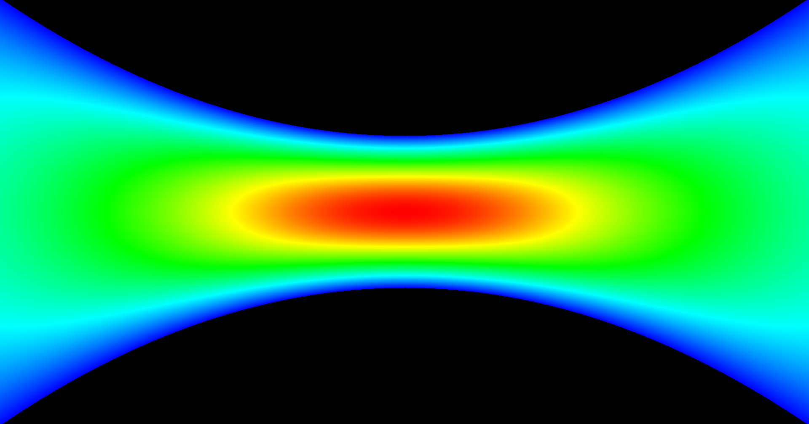

For the final project, we created a wind tunnel simulation. Particles can be spawn with mouse clicks. The size of the tunnel can be adjusted with mouse wheel scrolls.
Overview of the Wind Tunnel
stuff

|
Section 1
stuff

|

|
Section 2
stuff

|
Collision Detection
Particle-Boundry Collision
N-Body Collision

|

|
HeatMap
VelocityLower Velocity: Blue |
Arrows / Particles
ParticlesPress 2 to toggle Particles |
ArrowsPress 3 to toggle Arrows |
Math
Navier-Stokes: Continuity Equation
|
Source & Sink
|